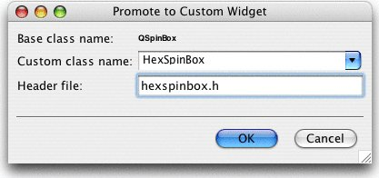

Integrating Custom Widgets with Qt Designer
Before we can use custom widgets in Qt Designer, we must make Qt Designer aware of them. There are two techniques for doing this: the "promotion" approach and the plugin approach.
The promotion approach is the quickest and easiest. It consists of choosing a built-in Qt widget that has a similar API to the one we want our custom widget to have and completing a dialog box in Qt Designer with some information about the custom widget. The widget can then be used in forms developed with Qt Designer, although it will be represented by the associated built-in Qt widget while the form is edited or previewed.
Here's how to insert a HexSpinBox widget into a form using this approach:
Create a QSpinBox by dragging it from Qt Designer's widget box onto the form. Right-click the spin box and choose Promote to Custom Widget from the context menu. Fill in the dialog that pops up with "HexSpinBox" as the class name and "hexspinbox.h" as the header file.
Voilà! The code generated by uic will include hexspinbox.h instead of <QSpinBox> and instantiate a HexSpinBox. In Qt Designer, the HexSpinBox widget will be represented by a QSpinBox, allowing us to set all the properties of a QSpinBox (for example, the range and the current value).

The drawbacks of the promotion approach are that properties that are specific to the custom widget aren't accessible in Qt Designer and that the widget isn't rendered as itself. Both these problems can be solved by using the plugin approach.
The plugin approach requires the creation of a plugin library that Qt Designer can load at run-time and use to create instances of the widget. The real widget is then used by Qt Designer when editing the form and for previewing, and thanks to Qt's meta-object system,Qt Designer can dynamically obtain the list of its properties. To show how this works, we will integrate the IconEditor from the previous section as a plugin.
First, we must subclass QDesignerCustomWidgetInterface and reimplement some virtual functions. We will assume that the plugin source code is located in a directory called iconeditorplugin and that the IconEditor source code is located in a parallel directory called iconeditor.
Here's the class definition:
#include <QDesignerCustomWidgetInterface>
class IconEditorPlugin : public QObject,
public QDesignerCustomWidgetInterface
{
Q_OBJECT
Q_INTERFACES(QDesignerCustomWidgetInterface)
public:
IconEditorPlugin(QObject *parent = 0);
QString name() const;
QString includeFile() const;
QString group() const;
QIcon icon() const;
QString toolTip() const;
QString whatsThis() const;
bool isContainer() const;
QWidget *createWidget(QWidget *parent);
};
The IconEditorPlugin subclass is a factory class that encapsulates the IconEditor widget. It inherits both QObject and QDesignerCustomWidgetIterface and uses the Q_INTERFACES() macro to tell moc that the second base class is a plugin interface. The functions are used by Qt Designer to create instances of the class and to obtain information about it.
IconEditorPlugin::IconEditorPlugin(QObject *parent)
: QObject(parent)
{
}
The constructor is trivial.
QString IconEditorPlugin::name() const
{
return "IconEditor";
}
The name() function returns the name of the widget provided by the plugin.
QString IconEditorPlugin::includeFile() const
{
return "iconeditor.h";
}
The includeFile() function returns the name of the header file for the specified widget encapsulated by the plugin. The header file is included in the code generated by the uic tool.
QString IconEditorPlugin::group() const
{
return tr("Image Manipulation Widgets");
}
The group() function returns the name of the widget box group this custom widget should belong to. If the name isn't already in use,Qt Designer will create a new group for the widget.
QIcon IconEditorPlugin::icon() const
{
return QIcon(":/images/iconeditor.png");
}
The icon() function returns the icon to use to represent the custom widget in Qt Designer's widget box. Here, we assume that the IconEditorPlugin has an associated Qt resource file with a suitable entry for the icon editor image.
QString IconEditorPlugin::toolTip() const
{
return tr("An icon editor widget");
}
The toolTip() function returns the tooltip to show when the mouse hovers over the custom widget in Qt Designer's widget box.
QString IconEditorPlugin::whatsThis() const
{
return tr("This widget is presented in Chapter 5 of <i>C++ GUI "
"Programming with Qt 4</i> as an example of a custom Qt "
"widget.");
}
The whatsThis() function returns the "What's This?" text for Qt Designer to display.
bool IconEditorPlugin::isContainer() const
{
return false;
}
The isContainer() function returns true if the widget can contain other widgets; otherwise, it returns false. For example, QFrame is a widget that can contain other widgets. In general, any Qt widget can contain other widgets, but Qt Designer disallows this when isContainer() returns false.
QWidget *IconEditorPlugin::createWidget(QWidget *parent)
{
return new IconEditor(parent);
}
The create() function is called by Qt Designer to create an instance of a widget class with the given parent.
Q_EXPORT_PLUGIN2(iconeditorplugin, IconEditorPlugin)
At the end of the source file that implements the plugin class, we must use the Q_EXPORT_PLUGIN2() macro to make the plugin available to Qt Designer. The first argument is the name we want to give the plugin; the second argument is the name of the class that implements it.
The .pro file for building the plugin looks like this:
TEMPLATE = lib
CONFIG += designer plugin release
HEADERS = ../iconeditor/iconeditor.h \
iconeditorplugin.h
SOURCES = ../iconeditor/iconeditor.cpp \
iconeditorplugin.cpp
RESOURCES = iconeditorplugin.qrc
DESTDIR = $(QTDIR)/plugins/designer
The .pro file assumes that the QtdIR environment variable is set to the directory where Qt is installed. When you type make or nmake to build the plugin, it will automatically install itself in Qt Designer's plugins directory. Once the plugin is built, the IconEditor widget can be used in Qt Designer in the same way as any of Qt's built-in widgets.
If you want to integrate several custom widgets with Qt Designer, you can either create one plugin for each one of them or combine them into a single plugin by deriving from QDesignerCustomWidgetCollectionInterface.
|